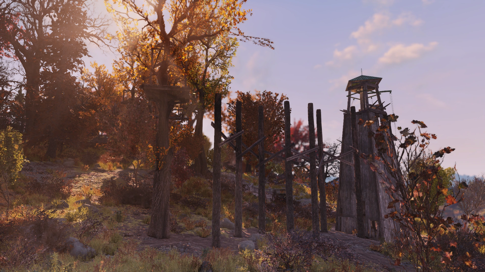
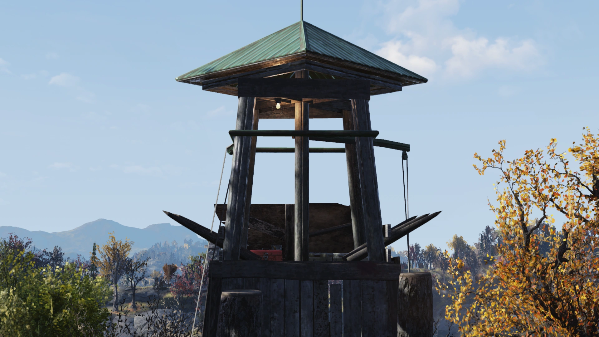
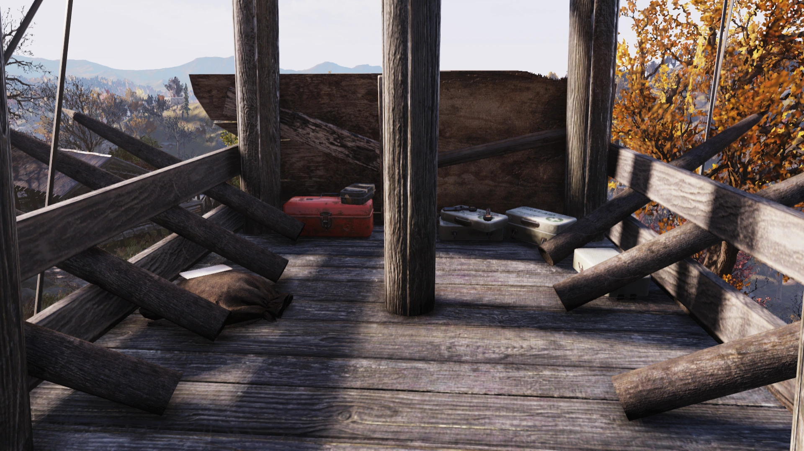
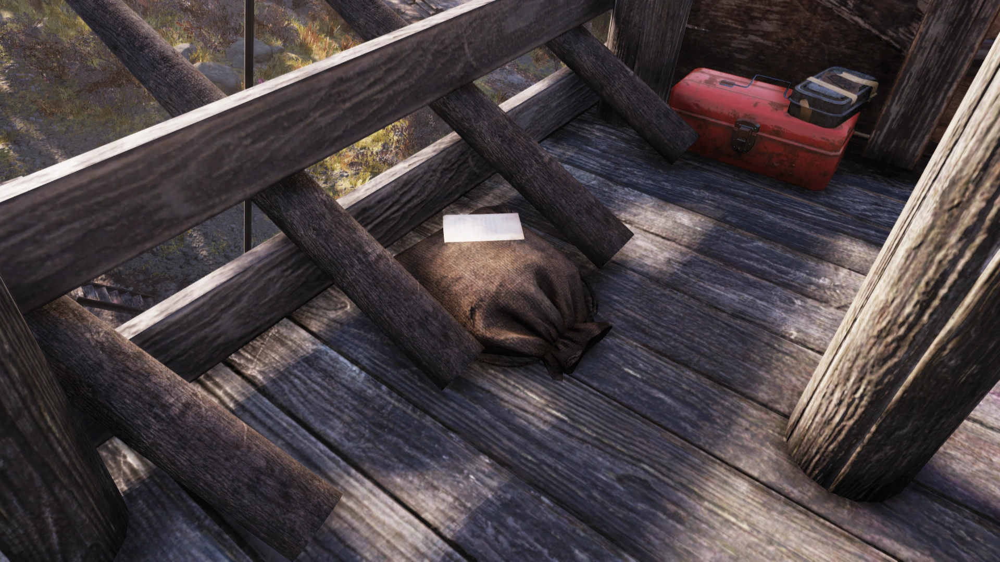

New River Gorge Ropes Course
ニューリバー・ゴージ・ロープスコース
概要
ニューリバー・ゴージ・ロープスコースは、アパラチアの森林地帯に位置する非マーク地点のロケーションです。
正式名称はニューリバー・ゴージ・ネイチャートレイル＆アドベンチャーパークです。
背景
ニューリバー・ゴージ・リゾートの北の森の中に設置されたこのロープスコースは、アクロバティックな動きの挑戦を提供し、最終目標はタワーの頂上に到達することです。
大戦後のある時点で、タンブリン・ジョーがこのタワーを一時的な住処として使っていましたが、最終的にタワーから転落死しています。
レイアウト

ロープスコースのメイン部分には、階段を上った先の小さなプラットフォームからアクセスします。
コース全体に4つの救急キットが配置されています。
細い橋を渡ると、最初の主要な障害物——より大きいが一層危険な木製の吊り橋が待っています。
一連のプラットフォームを抜けると、次の課題はワイヤーからぶら下がった木製の正方形の板の上を飛び移ることです。
3つ目の障害物はワイヤーからぶら下がった水平の丸太を渡ること。板よりも間隔が広くなっています。
最後の課題は垂直の丸太の上を飛び移ること——着地面がぐっと小さくなり、最高難度のジャンプが求められます。

コースを制覇した先には、ランダムなコンテナアイテム、キャップスタッシュ（確率）、スティムパックを含む消耗品、そしてボブルヘッド（確率）が報酬として待っています。
コースの西側には森を見渡す展望デッキがあり、メインコースの下には地上レベルの簡単な障害物コースもあります。
注目アイテム
- Ropes course note（ノート）
タワーの頂上。ロープスコースを完走して到達 - Vault-Tec ボブルヘッド（Agility）（確率出現）
タワーの頂上。ロープスコースを完走して到達
ノート
Ropes course note（ロープスコースのメモ）
タワーの頂上、ロープスコースを完走して到達した場所で入手可能
舞台裏
レベルデザイナーのスティーブ・マッシーが別のデザイナーに、ニューリバー・ゴージ・ロープスコースを「もっと面白くしろ」と伝えたところ、そのデザイナーは最終タワーを装飾し、タンブリン・ジョーとそのノートを追加しました。
マッシーはジョーとそのメモが面白すぎるとして大笑いし、そのデザイナーの仕上げを手伝いました。
マッシーはジョーを「ゲーム最初のNPCの一人」と呼んでいます。
登場作品
ニューリバー・ゴージ・ロープスコースは『Fallout 76』にのみ登場します。
ギャラリー


ニューリバー・ゴージ・ロープスコースは、Fallout 76の「報酬型探索」の好例です。
吊り橋、揺れる板、丸太、そして細い垂直ポール——段階的に難度が上がる障害物コースは、プレイヤーにリアルなアスリート体験を味わわせてくれます。
そしてコースを制覇した先で出会うのが、あの自信満々のタンブリン・ジョーのメモと——その遺体。
「俺みたいに凄い奴にとっては？ジムのいつもの一日と変わらないのさ」と書いたその人が、結局タワーから転落死しているという皮肉。
舞台裏の話によれば、彼は開発者の遊び心から生まれた「ゲーム最初のNPCの一人」。
環境ストーリーテリングとユーモアが見事に融合したFalloutらしいロケーションです。
This article was created by translating and editing New River Gorge ropes course from Nukapedia: The Fallout Wiki.
Licensed under the Creative Commons Attribution-Share Alike License (CC BY-SA 3.0).
コミュニティ維持のため、寄付を受け付けております。
> COMMENTS